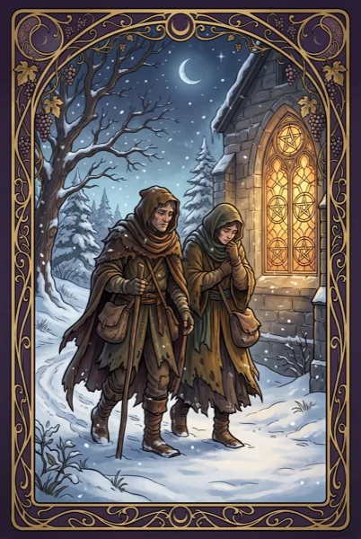

Five of Pentacles belongs to the suit of Pentacles — the earth suit of work, body and material life. Upright it speaks of hardship, isolation, feeling left out; reversed, of recovery, finding support. Below — the original 1911 meaning by A. E. Waite, the card's archetype and its astrological correspondence.

Keywords: hardship, isolation, feeling left out, scarcity, worry.
Keywords: recovery, finding support, new hope.
In the language of the sensation function (body, work and the material world — the earth of what is real): crisis — the function in conflict, loss as a teacher.
Decan: Mercury in Taurus. Earth triplicity (Taurus, Virgo, Capricorn).
Lunara reads Five of Pentacles in four voices — warm guide, 1911 classicist, depth psychologist and astrologer — and saves it to a private journal that notices your patterns.
Get Lunara for iPhone — free